S19A · 整组外观对照P1 · 备料赭黄衣 / 明黄背心
W1 · 焊接深蓝衣 / 橙背心 / 黄帽
W2 · 焊接亮蓝衣 / 橙背心 / 白帽
OP1 · 机器人操作紫衣 / 浅紫背心
AF1 · 装配深绿衣 / 黄绿背心
AF2 · 装配青绿衣 / 薄荷背心
E1 · 电气深蓝衣 / 青色背心和帽
PL1 · 管路亮蓝衣 / 浅蓝背心和蓝帽
T1 · 湿作业砖红衣 / 杏色背心
T2 · 湿作业赭黄衣 / 米色背心和白帽
C1 · 涂装米白衣 / 薄荷背心和帽
QA1 · 质检白衣 / 蓝背心
Lop · 吊机操作靛蓝衣 / 明黄背心
Lrig · 司索红衣红帽 / 白背心
Lsig · 指挥洋红衣 / 黄绿背心和帽
CUT1切割设备：蓝色机壳、金属色送料与滚轮、深色控制面。
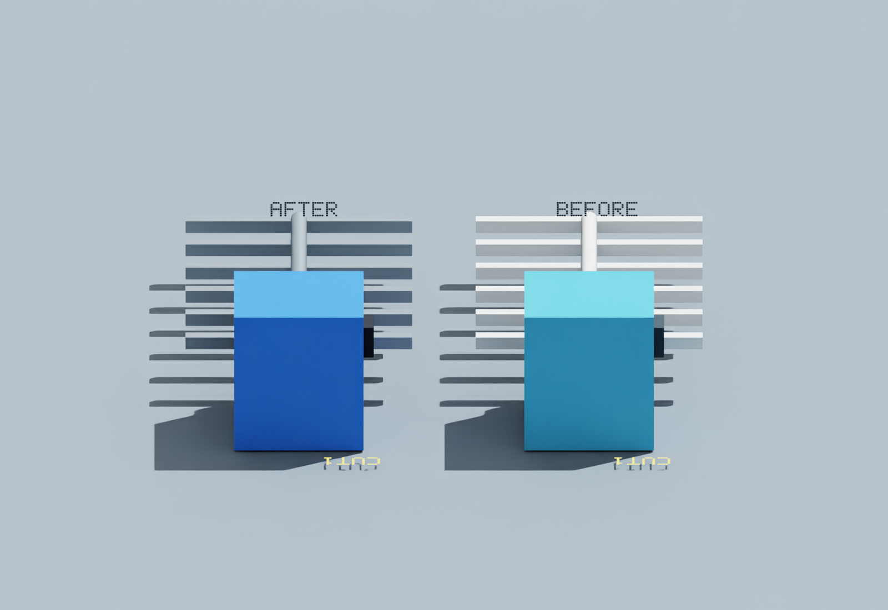
R1机器人：橙色机械臂、钢灰底座与控制柜；原可达边界保持。
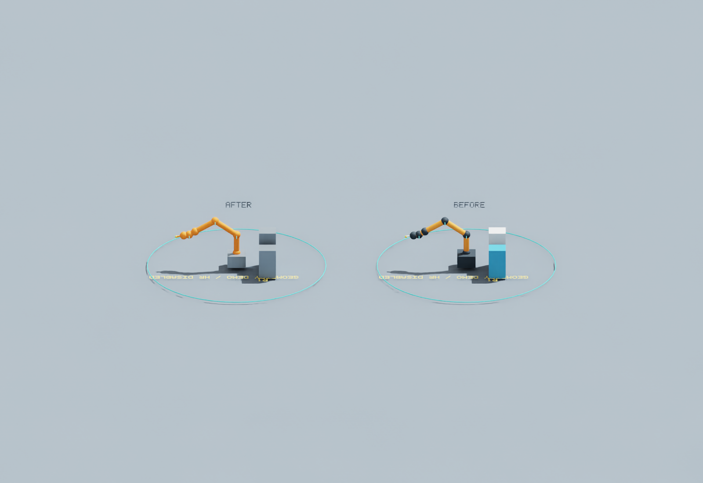
SCN-WELD-J2J2焊接设备：橙色电源、青色气瓶、深色线缆。
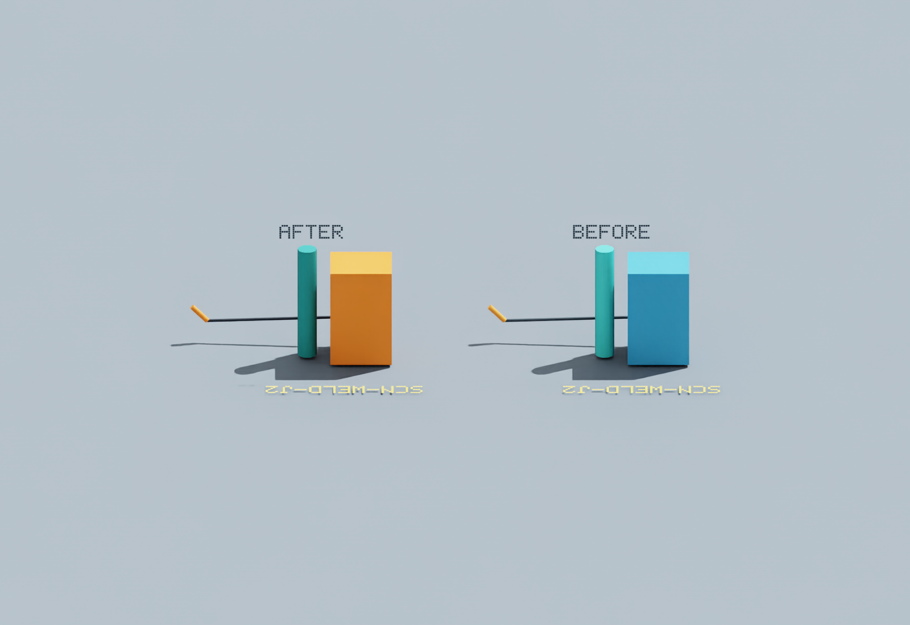
SCN-WELD-J3J3焊接设备：蓝色电源，与J2明显区分。
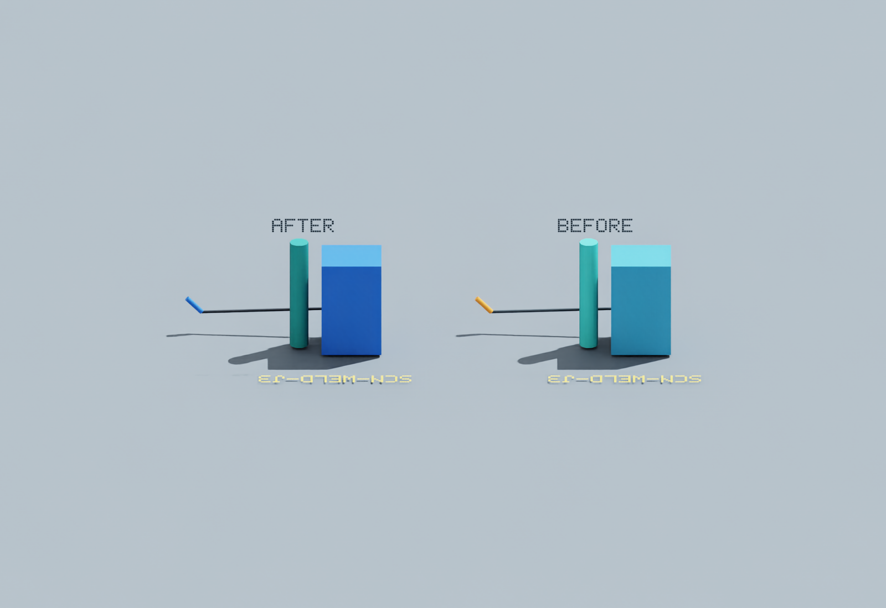
SCN-FORK-01搬运车：黄色主体、钢灰门架和货叉、深色车轮与控制件。
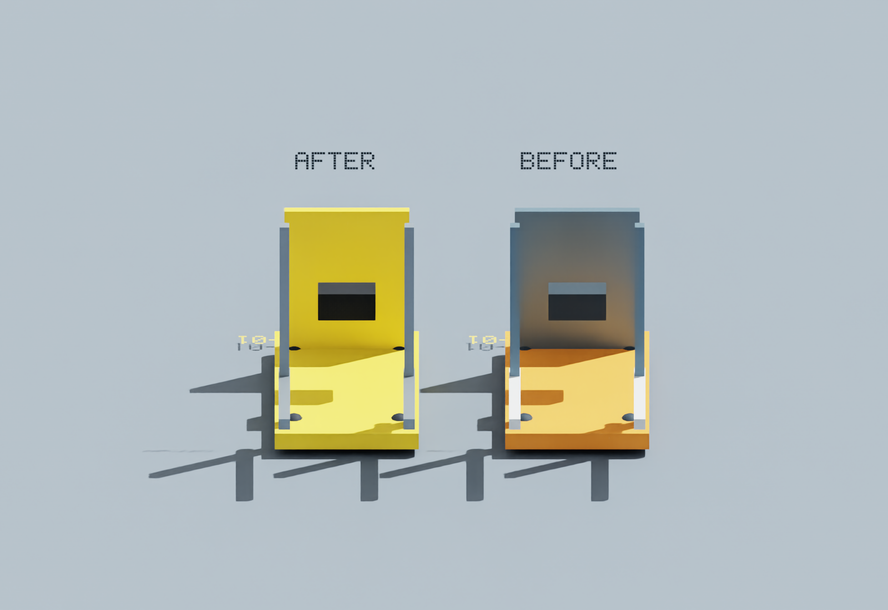
SCN-CART-01手推车：青绿底盘、金属色托盘和把手、深色车轮。
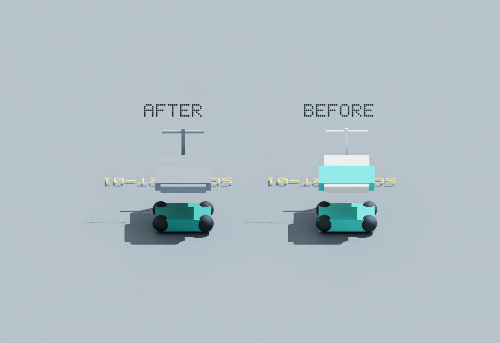
TEST1测试小车：白色底盘、蓝色仪表、金属色托盘。
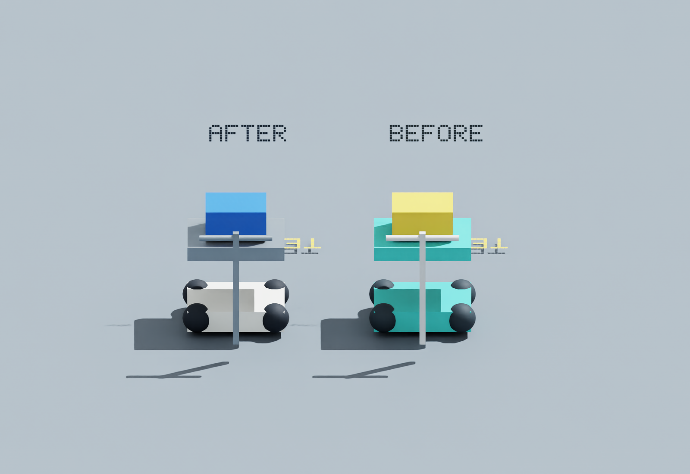
FIX-J2J2工装：青绿横梁、黄色夹持端。
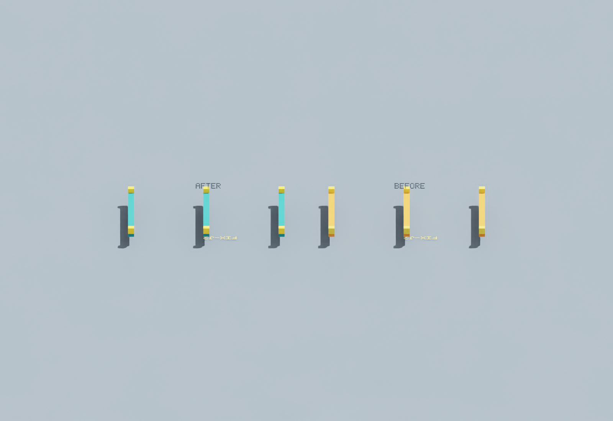
FIX-J3J3工装：蓝色横梁、黄色夹持端。
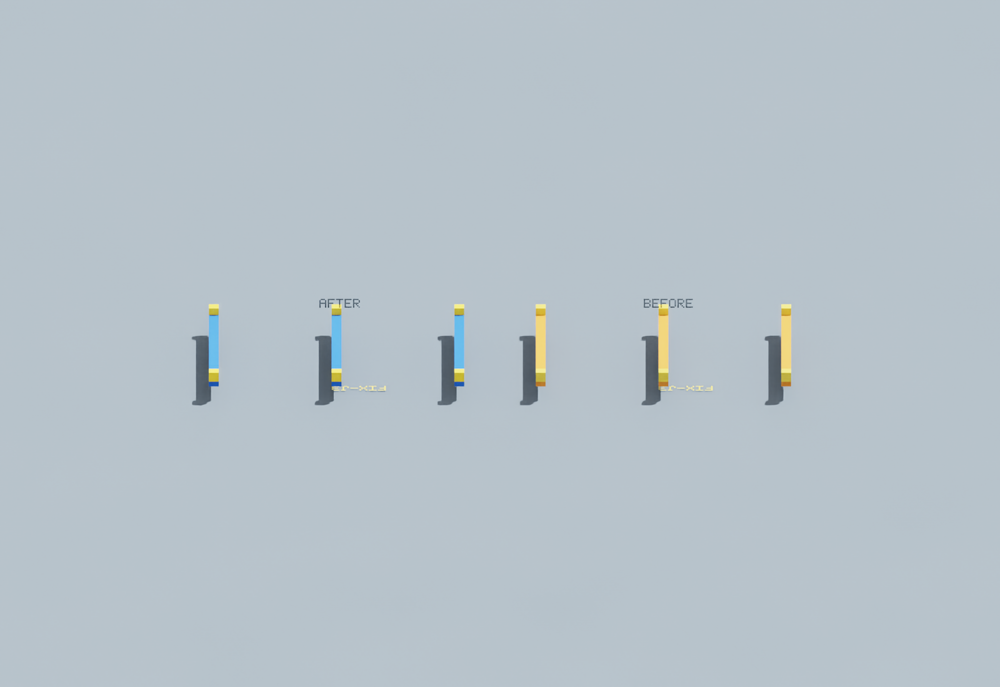
CR1吊机：黄色主体、深色车轮与绳索，原支承和跨度保持。
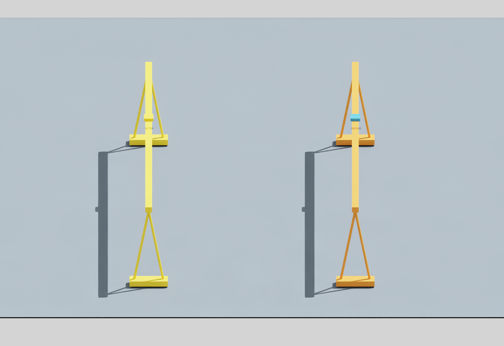
CR1-HOOK吊具：黄色承载梁与吊钩块、深色索具；此项颜色变化较小，主要统一材质。
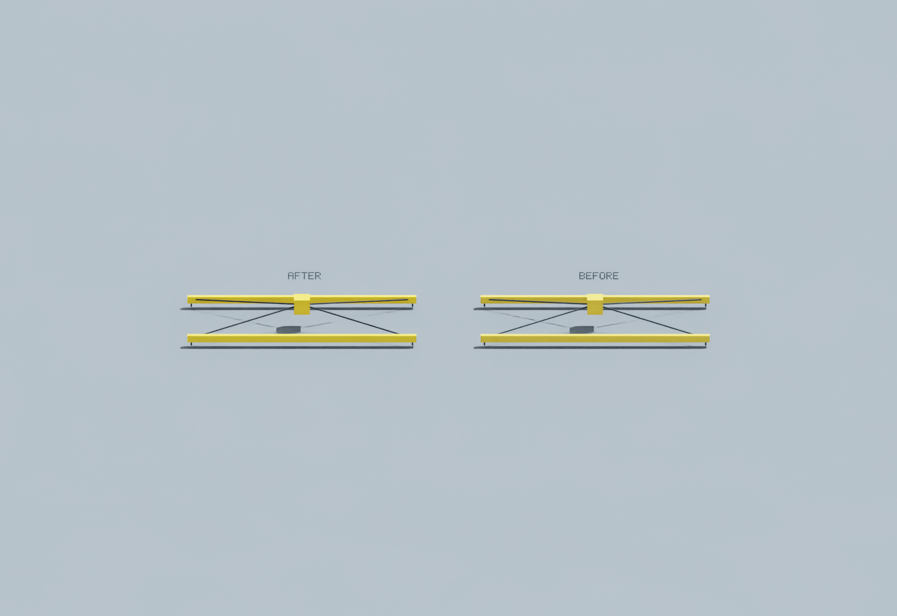
原1,148几何对象和728碰撞体核对保持，15人的身体外包尺寸、根位置和手位保持；57项场景回归通过。新增细节均为无碰撞视觉对象。人物动作仍沿用原实现，本图册不代表S19A动态表现及整步验收完成。
查看验证说明与静态帧耗时